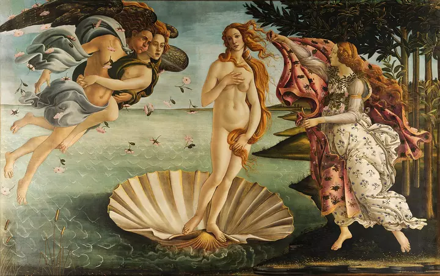

Morphogenesis
Solid form gives way to liquid movement
An underlying field of motion pushes and pulls the image across its surface, redistributing pixels in a way that feels organic and constantly in flux.
This animation is driven by a real-time WebGL displacement process where interaction introduces force into the surface, causing form to bend, stretch, and reorganize dynamically. Rather than relying on fixed keyframes, the visual state evolves continuously, allowing motion to feel organic, responsive, and materially present as the page progresses.